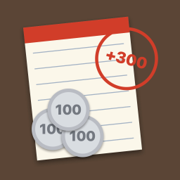

集める単位ごとに過不足が分かる割り勘
100円ごとなら、余りはいくら？
合計の金額と人数を入れると、1人いくら集めるかを出す割り勘です。集める単位ごとに、1人分と過不足を1つの表でくらべられます。
- 単位ごとの表。1円・10円・100円・500円・1000円ごとに集めたときの、組ごとの1人分・集まる額・過不足（+は余り、−は幹事の持ち出し）
- 丸め方。切り上げ・四捨五入・切り捨てを選ぶと、表が変わります
- 傾斜。多め・少なめなどの組に、60%〜200%の重みをつけられます
- 決めた割り勘は名前つきで記録できます
- 登録・課金はありません。記録はこの端末の中だけに保存します。画面のいちばん下に小さな広告が出ます